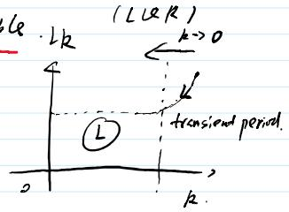

从闭环误差累加等式②出发，用能观性 + 反证法证明极限 $P$ 严格正定
上节证明了 $P_k$ 从 $P_0=0$ 出发收敛到某个极限 $P \geq 0$，本节要证明这个极限不只是半正定，而是严格正定。思路是一个标准的"能量衰减"论证：在闭环 $D = A + BL$ 下，二次型 $x_k^{\top} P x_k$ 沿轨迹每步减少 $x_i^{\top}(Q + L^{\top}RL)x_i$（等式②）。若 $P$ 只是半正定，就能找到一个 $x_0 \neq 0$ 使 $x_0^{\top} P x_0 = 0$，整个衰减链条被迫全部为零——于是 $Cx_k \to 0$ 且 $Lx_k \to 0$。把 $x_{k+1} = Dx_k$ 展开迭代，$Lx_k \to 0$ 意味着 $CA^i x_0 \to 0$ 对所有 $i$ 成立，堆成能观性矩阵 $M_0$ 就是 $M_0 x_0 = 0$。但 $(A, C)$ 能观保证 $M_0$ 列满秩，只能 $x_0 = 0$——与反设矛盾。所以 $P \succ 0$。
上两次课（KF L21 + 本讲）用接近两小时完整推进 Riccati 收敛定理的证明。目前进度：
| 步骤 | 内容 | 状态 |
|---|---|---|
| S1 | $P_0 = 0$ 时 $P_k$ 收敛（单调 + 有界） | ✅ KF L21 |
| S2 | $D = A + BL$ 稳定 | ✅ KF L21（含于 S1 论证） |
| S3 | $P \succ 0$ 严格正定 | 🔸 本节 |
| S4 | 任意 $P_0 \geq 0$ 都收敛到同一 $P$ | 🔸 下节（夹逼定理） |
| S5 | $P$ 是 ARE 的唯一解 | 🔸 下节 |
📐 S3 要证什么
定理结论 (1) 说：存在 $p > 0$（严格正定），使得对任意 $P_0 \geq 0$，$P_k \to P$。上节只证了极限存在且 $\geq 0$。本节补上"严格"二字——$P$ 的零空间是空的，即 $x^{\top} P x > 0\ \forall x \neq 0$。
为什么 $P \succ 0$ 重要？它是 S4 夹逼论证的基石之一（下节会看到 $P_k(P_0)$ 与 $P_k(0)$ 的差被 $D^{\top k} P_0 D^k$ 控制，$P \succ 0$ 保证极限行为可控），也是闭环稳定性与 KF 估计误差协方差物理解释的来源：$P \succ 0$ 说明稳态下估计误差在任何方向上都有严格正的不确定度。
设极限 $P$ 满足 ARE。把它改写成"闭环"形式（KF L20 讲过配方技巧）：定义闭环矩阵 $D = A + BL$，其中 $L = -[B^{\top} P B + R]^{-1} B^{\top} P A$，则 ARE 等价于
（把 $P = A^{\top} P A + Q - A^{\top} P B[B^{\top} P B + R]^{-1} B^{\top} P A$ 中的后两项配成 $D^{\top} P D + L^{\top} R L$，交叉项恰好抵消。）
现在让状态在闭环下演化：$x_{i+1} = D x_i$。对每一步写 $x_{i+1}^{\top} P x_{i+1} - x_i^{\top} P x_i$，用上式展开：
把 $i = 0, 1, \dots, k$ 的这些等式 telescoping（叠缩）相加，中间项全部抵消，剩下首尾：
✅ 等式②

课堂板书上这一步还对比了最优控制问题的视角：带终端代价 $x_k^{\top} P_k x_k$ 的 $k$ 步 LQR 问题的最优代价是 $x_0^{\top} g^k(P_k)x_0$ 形式的迭代（这是 S1 的辅助系统语言），而等式②是它在闭环稳态下的化身——两者的桥梁就是 ARE 本身。
🧠 直觉：等式②在说什么
左边是"现在"的能量，右边是"初始能量减去沿途所有损耗"。$Q + L^{\top}RL \succeq 0$ 是每步的损耗（状态损耗 + 控制损耗），所以能量单调不增。这其实就是李雅普诺夫函数 $V(x) = x^{\top} P x$ 沿闭环轨迹的衰减律——S2（$D$ 稳定）的习题版。
等式②左边 $x_{k+1}^{\top} P x_{k+1} \geq 0$（$P \succeq 0$），右边第一项 $x_0^{\top} P x_0$ 是固定非负常数。于是求和项被夹在中间：
部分和单调有界 ⟹ 级数收敛 ⟹ 通项趋于零：
$Q + L^{\top}RL$ 是两项之和，且都半正定，所以各自趋于零：
取 $Q = C^{\top}C$（能观性分解下的标准形式，板书里写作 $Q \cong C^{\top}C$），由 $x_k^{\top} C^{\top} C x_k = \|Cx_k\|^2 \to 0$ 得
⚠️ 这里用到的假设
定理条件 "(A, C) observable" 中 $Q \cong C^{\top}C$：代价里的状态权重 $Q$ 与输出矩阵 $C$ 通过 $Q = C^{\top}C$ 关联。这是 LQR 标准设定（检测能观性时用 $C$ 而不是 $Q^{1/2}$）。
现在做反证。假设 $P$ 不严格正定，即存在 $x_0 \neq 0$ 使 $x_0^{\top} P x_0 = 0$（$P \succeq 0$ 的零空间非平凡）。
把这个 $x_0$ 代入等式②。左边第一项 $x_0^{\top} P x_0 = 0$，且 $x_{k+1}^{\top} P x_{k+1} \geq 0$，于是求和项被"上夹"为 0；它本来就 $\geq 0$，所以每一项都必须恰好为零：
（注意从"趋于零"升级成了"恒为零"——因为初始能量本身就是 0，没有任何预算可以消耗。）
关键一步：用 $x_{i+1} = D x_i = (A + BL)x_i = A x_i + B L x_i$。既然 $L x_i = 0$，那么 $x_{i+1} = A x_i$。递推展开并作用 $C$：
（第一列来自 $Cx_k \to 0$ 在恒零情形下的 $Cx_0 = 0$；其余各列来自 $x_{i+1} = Ax_i$ 与 $Cx_i = 0$。）堆成矩阵：
✅ 能观性矩阵零化
但 $(A, C)$ 能观——这正是能观性矩阵的定义：$M_0$ 列满秩，$M_0 x = 0$ 只有零解。所以 $x_0 = 0$，与反设 $x_0 \neq 0$ 矛盾。
🎉 S3 完成：$P \succ 0$
Riccati 迭代从 $P_0 = 0$ 出发的极限 $P$ 不仅半正定，而且严格正定。板书结论："$M_0 x_0 = 0 \Rightarrow x_0 = 0$，contradiction! $\Rightarrow P > 0$"。
🧠 证明结构复盘
这是一个三段式论证，每段用一个不同的工具：
注意 $Lx_i = 0$ 这一条同样不可或缺：它保证了闭环轨迹与开环轨迹在反设情形下重合（$x_{i+1} = Ax_i$），$CA^i$ 才能逐层堆出来。控制通道被"冻住"是能观性发挥作用的前提。
不看讲义，从 ARE 的闭环形式 $P = D^{\top}PD + Q + L^{\top}RL$ 出发，推出等式②。哪一步用到了"叠缩"（telescoping）？
每步写 $x_{i+1}^{\top}Px_{i+1} - x_i^{\top}Px_i = -x_i^{\top}(Q+L^{\top}RL)x_i$，对 $i=0$ 到 $k$ 求和，左边的中间项两两抵消（$x_1^{\top}Px_1$ 出现一次正一次负），只剩 $x_{k+1}^{\top}Px_{k+1} - x_0^{\top}Px_0$。
第 3 节只推出了 $Cx_k \to 0$、$Lx_k \to 0$（极限意义）。第 4 节的反设情形为什么能把它们加强成对所有 $i$ 恒为零？如果 $x_0^{\top}Px_0 > 0$，还能这样加强吗？
反设时 $x_0^{\top}Px_0 = 0$，等式②右边全为 $-\sum(\cdots) \leq 0$ 与左边 $\geq 0$ 夹出求和项恒为零，于是每一项都必须为零——是"预算为零所以每步损耗为零"，比极限强得多。若 $x_0^{\top}Px_0 > 0$，只有"损耗总和不超过预算"这一个约束，单步损耗不必为零，整个论证失效——这正是为什么需要反证法。
标量系统 $a = 0.9, b = 1, q = 1, r = 0.1$，从 $P_0 = 0$ 迭代 $p_{k+1} = a^2 p_k + q - \frac{a^2 b^2 p_k^2}{b^2 p_k + r}$ 至收敛（约 $p \approx 1.074$）。验证：① 极限是 ARE 的正根；② 对该标量系统，$p > 0$ 是否自动成立？什么时候可能出 $p = 0$？
迭代收敛值 $p \approx 1.0741$；ARE 标量化后 $-b^2p^2 + (b^2q + r(a^2-1))p + rq = 0$，代入得唯一正根 $1.0741$，与迭代一致。标量情形 $p = 0$ 是 ARE 解当且仅当 $rq = 0$（即 $q=0$ 或 $r=0$）——只要 $q > 0, r > 0$，正根严格为正。矩阵情形对应：$Q \succ 0$（能观由 $Q = C^{\top}C$ 继承）时 $P \succ 0$；$Q \succeq 0$ 半正定时就需要本节的能观性论证来排除零空间。
施老师大课堂 · 研讨会系列 KF L22(1/2) · 等式②与 S3 证明——P 的正定性
板书来源：KF L22 · 研讨会系列 29 · 施凌老师（2026-09-05）· 结合课堂录音转写整理